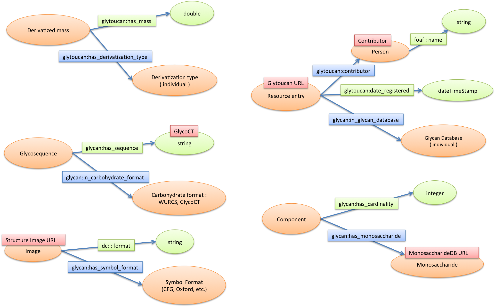

GlyTouCan RDF data model
Ontology
| Prefix | Namespace | Vocabularies |
|---|---|---|
| rdf | http://www.w3.org/1999/02/22-rdf-syntax-ns# | RDF |
| rdfs | http://www.w3.org/2000/01/rdf-schema# | RDF Schema |
| owl | http://www.w3.org/2002/07/owl# | OWL |
| xsd | http://www.w3.org/2001/XMLSchema# | XML Schema |
| foaf | http://xmlns.com/foaf/0.1/ | FOAF Vocabulary |
| glycan | http://purl.jp/bio/12/glyco/glycan# | GlycoRDF ontology |
| glytoucan | http://www.glytoucan.org/glyco/owl/glytoucan# | Glytoucan ontology |
Terms of Glytoucan ontology
Classes
| Class |
|---|
| glytoucan:derivatized_mass |
| glytoucan:derivatization_type |
Object Properties
| Property | Domain | Range |
|---|---|---|
| glytoucan:contributor | glycan:resource_entry | foaf:person |
| glytoucan:has_derivatization_type | glycan:derivatized_mass | glytoucan:derivatization_type |
| glytoucan:has_derivatized_mass | glycan:saccharide | glytoucan:derivatized_mass |
Datatype Properties
| Property | Domain | Range |
|---|---|---|
| glytoucan:date_registered | xsd:dateTimeStamp | |
| glytoucan:has_mass | glytoucan:derivatized_mass | xsd:double |
| glytoucan:has_primary_id | glycan:saccharide | xsd:string |
Repository RDF semantic relationship
Node and edge
| Class | |
| Data (literal, string, integer, double) | |
| Object property | |
| Data property |
{kind=link}

{kind=link}
URI Construction
Saccharide
URI pattern : http://rdf.glycoinfo.org/glycan/{AccessionNumber}
ex：http://rdf.glycoinfo.org/glycan/G00021MO
Derivatized Mass
URI pattern : http://rdf.glycoinfo.org/{derivatization type}/{value of the mass}
ex：http://rdf.glycoinfo.org/derivatization_type_none/1176.0175585040001
Derivatization Type
None:
http://www.glytoucan.org/glyco/owl/glytoucan#derivatization_type_none
Glycosquence
GlycoCT
URI pattern : http://rdf.glycoinfo.org/glycan/{ Accession Number }/glycoct
ex：http://rdf.glycoinfo.org/glycan/G00021MO/glycoct
Component
URI pattern : http://rdf.glycoinfo.org/component/{ number of monosaccharide }_{ monosaccharide }
ex：http://rdf.glycoinfo.org/component/1_a-dido-HEX-1%3A5%7C6%3Aa
- The monosaccharide name is encoded such as "a-dido-HEX-1:5|6:a".
Monosaccharide (Monosaccharide DB RDF web service)
URL pattern : http://www.monosaccharidedb.org/rdf/monosaccharide.action?name={monosaccharide name}
ex : http://www.monosaccharidedb.org/rdf/monosaccharide.action?name=a-dido-HEX-1%3A5%7C6%3Aa
Image (glySpace web service)
The structure image previewing with the glySpace web service.
URI pattern : http://www.glytoucan.org/glyspace/service/glycans/{ Accession Number }/image?style=extended&format=png¬ation={ notation name }
- CFG
- CFG grey scale
- Oxford
- Oxford color scale
- CFG and Oxford
- IUPAC
http://www..glytoucan.org/glyspace/service/glycans/G00021MO/image?style=extended&format=png¬ation=cfg
http://www.glytoucan.org/glyspace/service/glycans/G00021MO/image?style=extended&format=png¬ation=cfgbw
http://www.glytoucan.org/glyspace/service/glycans/G00021MO/image?style=extended&format=png¬ation=uoxf
http://www.glytoucan.org/glyspace/service/glycans/G00021MO/image?style=extended&format=png¬ation=uoxf-color
http://www.glytoucan.org/glyspace/service/glycans/G00021MO/image?style=extended&format=png¬ation=cfg-uoxf
http://www.glytoucan.org/glyspace/service/glycans/G00021MO/image?style=extended&format=png¬ation=iupac
Contributor
URI pattern : http://rdf.glycoinfo.org/glytoucan/contributor/userId/{User ID}
ex：http://rdf.glycoinfo.org/glytoucan/contributor/userId/105
Motif (Saccharide)
The motif URI is the same saccharide URI
URI pattern : http://rdf.glycoinfo.org/glycan/{AccessionNumber}
ex：http://rdf.glycoinfo.org/glycan/G00021MO
Resource entry (Home page)
The resource entry URI is a URL of the Glycan entry at the Glytoucan.
URI pattern : http://www.glytoucan.org/Structures/Glycans/{ Accession Number }
ex：http://www.glytoucan.org/Structures/Glycans/G00021MO
Example RDF Triple
Saccharide
@PREFIX glycan: <http://purl.jp/bio/12/glyco/glycan#> . <http://rdf.glycoinfo.org/glycan/G00054MO> a glycan:saccharide .
Glytoucan Accession Number
@PREFIX glycan: <http://purl.jp/bio/12/glyco/glycan#> . <http://rdf.glycoinfo.org/glycan/G00054MO> a glycan:saccharide ; glytoucan:has_primary_id "G00054MO" .
Squence
GlycoCT
@PREFIX glycan: <http://purl.jp/bio/12/glyco/glycan#> . <http://rdf.glycoinfo.org/glycan/G00054MO> a glycan:saccharide ; glycan:has_glycosequence <http://rdf.glycoinfo.org/glycan/G00054MO/glycoct> .
<http://rdf.glycoinfo.org/glycan/G00054MO/glycoct> a glycan:glycosequence ; glycan:in_carbohydrate_format glycan:carbohydrate_format_glycoct ; glycan:has_sequence "RES 1b:b-dglc-HEX-1:5 2s:n-acetyl 3b:a-lgal-HEX-1:5|6:d 4b:b-dgal-HEX-1:5 5b:a-dgro-dgal-NON-2:6|1:a|2:keto|3:d 6s:n-acetyl LIN 1:1d(2+1)2n 2:1o(3+1)3d 3:1o(4+1)4d 4:4o(3+2)5d 5:5d(5+1)6n"^^xsd:string .
Mass
Derivatized Mass: URI pattern
Derivatization type: URI pattern
@PREFIX xsd: <http://www.w3.org/2001/XMLSchema#> @PREFIX glycan: <http://purl.jp/bio/12/glyco/glycan#> . @PREFIX glytoucan: <http://www.glytoucan.org/glyco/owl/glytoucan#> . <http://rdf.glycoinfo.org/glycan/G00054MO> a glycan:saccharide ; glytoucan:has_derivatized_mass <http://rdf.glycoinfo.org/derivatization_type_none/820.2960859799999> .
<http://rdf.glycoinfo.org/derivatization_type_none/820.2960859799999> a glytoucan:derivatized_mass ; glytoucan:has_derivatization_type glytoucan:derivatization_type_none ; glytoucan:has_mass "820.2960859799999"^^xsd:double .
Component
@PREFIX glycan: <http://purl.jp/bio/12/glyco/glycan#> . <http://rdf.glycoinfo.org/glycan/G00054MO> a glycan:saccharide ; glycan:has_component <http://rdf.glycoinfo.org/component/1_b-dglc-HEX-1%3A5%7C%7C%282d%3A1%29n-acetyl> , <http://rdf.glycoinfo.org/component/1_a-lgal-HEX-1%3A5%7C6%3Ad> , <http://rdf.glycoinfo.org/component/1_a-dgro-dgal-NON-2%3A6%7C1%3Aa%7C2%3Aketo%7C3%3Ad%7C%7C%285d%3A1%29n-acetyl> , <http://rdf.glycoinfo.org/component/1_b-dgal-HEX-1%3A5> .
<http://rdf.glycoinfo.org/component/1_b-dglc-HEX-1%3A5%7C%7C%282d%3A1%29n-acetyl> a glycan:component ; glycan:has_cardinality 1 ; glycan:has_monosaccharide <http://www.monosaccharidedb.org/rdf/monosaccharide.action?name=b-dglc-HEX-1%3A5%7C%7C%282d%3A1%29n-acetyl> .
Monosaccharide
@PREFIX glycan: <http://purl.jp/bio/12/glyco/glycan#> . <http://www.monosaccharidedb.org/rdf/monosaccharide.action?name=b-dglc-HEX-1%3A5%7C%7C%282d%3A1%29n-acetyl> a glycan:monosaccharide .
Image
@PREFIX glycan: <http://purl.jp/bio/12/glyco/glycan#> . <http://rdf.glycoinfo.org/glycan/G00054MO> a glycan:saccharide ; glycan:has_image <http://www.glytoucan.org/glyspace/service/glycans/G00054MO/image?style=extended&format=png¬ation=uoxf-color> , <http://www.glytoucan.org/glyspace/service/glycans/G00054MO/image?style=extended&format=png¬ation=iupac> , <http://www.glytoucan.org/glyspace/service/glycans/G00054MO/image?style=extended&format=png¬ation=cfgbw> , <http://www.glytoucan.org/glyspace/service/glycans/G00054MO/image?style=extended&format=png¬ation=cfg-uoxf> , <http://www.glytoucan.org/glyspace/service/glycans/G00054MO/image?style=extended&format=png¬ation=cfg> , <http://www.glytoucan.org/glyspace/service/glycans/G00054MO/image?style=extended&format=png¬ation=uoxf> .
<http://www.glytoucan.org/glyspace/service/glycans/G00054MO/image?style=extended&format=png¬ation=cfg> a glycan:image ; glycan:has_symbol_format glycan:symbol_format_cfg ; dc:format "image/png"^^xsd:string .
- Notation schema
- glycan:symbol_format_cfg : CFG
- glycan:symbol_format_cfg_bw : CFG grey scale
- glycan:symbol_format_uoxf : Oxford
- glycan:symbol_format_text : IUPAC
- glycan:symbol_format_uoxf_color : Oxford color scale
- glycan:symbol_format_cfg_uoxf : CFG and Oxford
Resource entry ( Home page, Contributor & Contribution Time )
@PREFIX glycan: <http://purl.jp/bio/12/glyco/glycan#> . @PREFIX glytoucan: <http://www.glytoucan.org/glyco/owl/glytoucan#> . @PREFIX xsd: <http://www.w3.org/2001/XMLSchema#> . <http://rdf.glycoinfo.org/glycan/G00054MO> a glycan:saccharide ; glycan:has_resource_entry <http://www.glytoucan.org/Structures/Glycans/G00054MO> .
<http://www.glytoucan.org/Structures/Glycans/G00054MO>
a glycan:resource_entry ;
glycan:in_glycan_database glytoucan:database_glytoucan ;
glytoucan:contributor <http://rdf.glytoucan/contributor/userId/1> ;
glytoucan:date_registered "2014-10-20 06:47:31.204"^^xsd:dateTimeStamp .
Contributor
@PREFIX foaf: <http://xmlns.com/foaf/0.1/> .
<http://rdf.glycoinfo.org/glytoucan/contributor/userId/1>
a foaf:Person ;
foaf:name "Administrator" .
Motif
@PREFIX glycan: <http://purl.jp/bio/12/glyco/glycan#> . @PREFIX foaf: <http://xmlns.com/foaf/0.1/> . <http://rdf.glycoinfo.org/glycan/G00054MO> a glycan:saccharide ; glycan:has_motif <http://rdf.glycoinfo.org/glycan/G00054MO> . <http://rdf.glycoinfo.org/glycan/G00054MO> a glycan:glycan_motif ; rdfs:label "Sialyl Lewis X"@en .
// Abbreviated <http://rdf.glycoinfo.org/glycan/G00054MO> a glycan:saccharide, glycan:glycan_motif ; rdfs:label "Sialyl Lewis X"@en . glycan:has_motif <http://rdf.glycoinfo.org/glycan/G00054MO> .